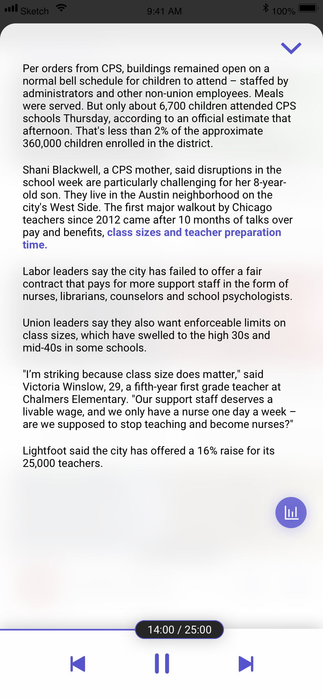
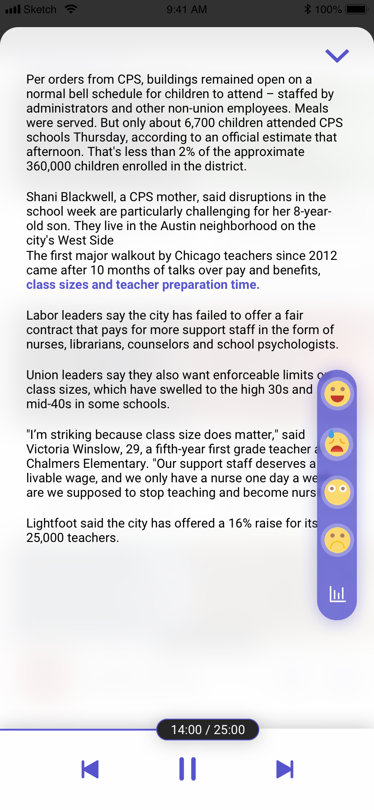
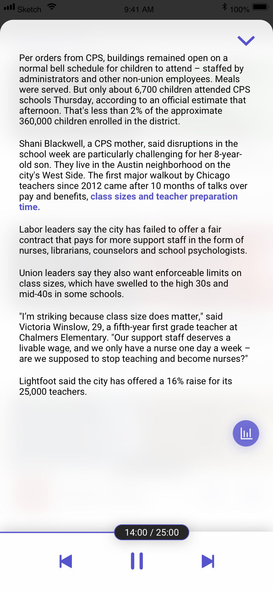
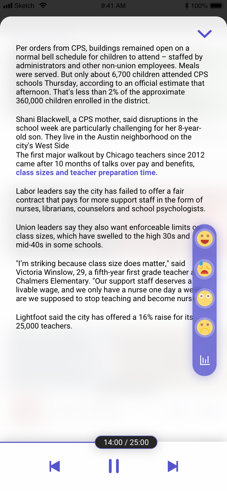

Problems & Insights
Commuters love listening to the news.
"I don't wanna waste commuting time. Listening to news makes me feel like learning something."
"I don't want to / it's not easy for me to take out my cell phone when commuting."
"I wanna send emails or browse social media while listening to the news.
It's inconvenient to switch between the news app and other apps. "
"There's no WiFi when commuting."
"I wanted to know different media's perspectives about a piece of news."
"I only listen to sports news."


 


